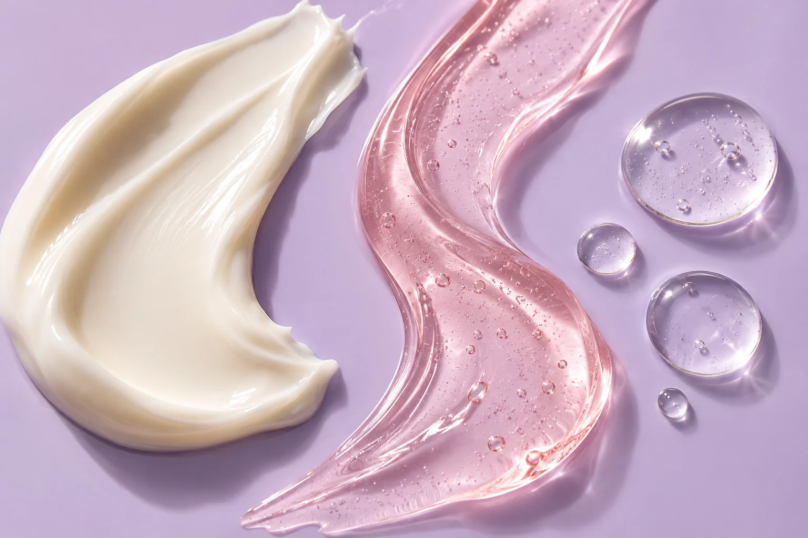

Your ritual.Your rules.✳
Fresh textures. Small rituals. A little main-character energy for your everyday.
More you-time.SCROLL TO GET DEWY ↓
make room for them.
Meet your
daily crushes.
Six essentials. Plenty of personality. Find a texture you love and a step that makes sense.
A fictional brand concept. Products, ingredients and prices are illustrative, not available for purchase.
YOUR SPACE.
✳
A routine
with your
name on it.
Light and fresh? Rich and comforting? Two steps or a little extra? Your preferences come first.
Your pace02
Your texture03
Your budget

LIGHT. SILKY. CUSHIONY. PICK YOUR MOOD.Let’s talk
skin stuff.
A few good reads. No ingredient overwhelm.
A little care.
A lot of you.
Skincare doesn’t have to be another thing to get right. We imagine a little room for curiosity, a little room for care, and plenty of room to be yourself.
Room to understand.
Clear product roles and ingredients, right where you need them.
Room to choose.
Shop directly or start with a ritual. You set the pace.
Room to simplify.
A small range, editable steps, and no pressure to add more.